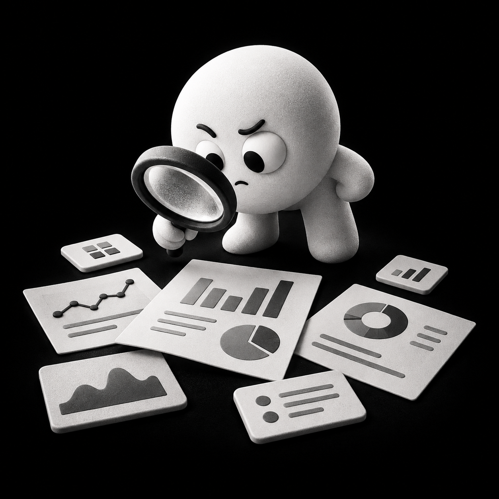

Lead poco pertinenti
Il budget genera contatti, ma troppi non hanno requisiti, interesse o capacità di acquisto.
ACQUISIZIONE B2B, DALLE CAMPAGNE ALL'APPUNTAMENTO.
Generiamo contatti B2B, li qualifichiamo al telefono e portiamo al commerciale appuntamenti con potenziali clienti in target.
Campagne, landing page, telefonate e attività commerciali possono produrre molti contatti senza generare abbastanza conversazioni utili.
Il budget genera contatti, ma troppi non hanno requisiti, interesse o capacità di acquisto.
Campagne, qualifica e vendita lavorano separatamente e le informazioni si perdono tra un passaggio e l'altro.

Il costo per lead da solo non dice quanti contatti diventano appuntamenti e opportunità commerciali.
Il team perde tempo a rincorrere contatti freddi invece di parlare con prospect già qualificati.
Partiamo dal tuo processo attuale e individuiamo dove si disperdono budget e opportunità.
Richiedi valutazione gratuitaMetrics è un servizio di acquisizione B2B di almeno tre mesi. Gestiamo lead generation, qualifica telefonica e ottimizzazione fino all'appuntamento.
Senza Metrics
Con Metrics
Tre mesi sono il tempo minimo per raccogliere segnali utili, correggere il processo e misurare la qualità degli appuntamenti.
Valutiamo insieme se il metodo è sostenibile per la tua azienda.
Richiedi valutazione gratuitaOgni percorso parte dall'offerta e collega campagne, qualifica telefonica, appuntamenti e dati commerciali.
Studiamo offerta, target, processo commerciale, dati disponibili e capacità di gestire nuovi appuntamenti.
Definiamo messaggi, canali, campagne e percorso più adatto per raggiungere potenziali clienti B2B.
Attiviamo la lead generation e raccogliamo richieste attraverso campagne e landing page dedicate.
Un operatore contatta i lead, verifica i requisiti e fissa gli appuntamenti con i prospect in target.
Usiamo dashboard e feedback commerciali per migliorare campagne, qualifica e qualità degli appuntamenti.
Verifichiamo se il tuo mercato e la tua struttura sono pronti per questo percorso.
Richiedi valutazione gratuitaMetrics unisce strategia, campagne, conversione e qualifica telefonica. Fabio e Fabio seguono direttamente ogni progetto e il rapporto con il cliente.
Co-founder
Designer e digital strategist con oltre 15 anni di esperienza. In Metrics cura posizionamento, messaggi e landing page per rendere l'offerta più chiara e aumentare la conversione delle campagne.
Profilo LinkedInCo-founder
Media buyer specializzato in acquisizione misurabile. In Metrics gestisce campagne, qualifica telefonica e passaggio al commerciale, usando i dati per migliorare quantità e qualità degli appuntamenti.
Profilo LinkedInIn call parlerai direttamente con entrambi i founder.
Richiedi valutazione gratuitaNon pubblichiamo nomi, loghi o dati riservati senza autorizzazione. In videochiamata mostriamo dashboard anonimizzate e spieghiamo come leggiamo il percorso dal lead all'appuntamento.
Richiedi valutazione gratuitaPer riservatezza il cliente non viene nominato. Il risultato è presentato senza riferimenti identificativi.
Un'offerta B2B già validata e un investimento pubblicitario sostenibile per alimentare il processo.
Collegare lead generation, qualifica telefonica e appuntamenti in un unico sistema misurabile.
Campagne e qualifica monitorate attraverso dashboard e feedback del processo commerciale.
Una media di circa 30 appuntamenti al mese ottenuti attraverso il metodo Metrics.
In videochiamata possiamo mostrarti dashboard anonimizzate e criteri di misurazione.
Richiedi valutazione gratuitaLavoriamo con PMI B2B che hanno già validato l'offerta e possono sostenere un percorso di acquisizione di almeno tre mesi.
Se non ci sono le condizioni per lavorare bene, te lo diciamo durante la prima videochiamata.
In videochiamata Fabio Fregoni e Fabio Erbì ascoltano la situazione, spiegano il metodo Metrics e mostrano esempi di dashboard anonimizzate. Se emergono le condizioni per lavorare insieme, raccolgono le informazioni necessarie per un'analisi successiva.